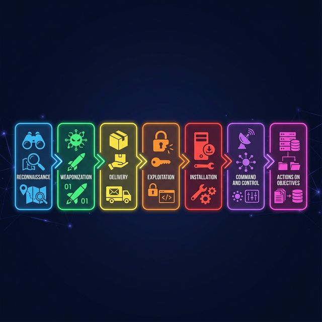

Cyber Kill Chain
The cyber kill chain is a seven-stage attack lifecycle model created by Lockheed Martin. It maps how an attacker progresses from initial research all the way to achieving their goal — and shows defenders exactly where they can stop the attack.
Interview answer
"The cyber kill chain is a seven-stage model showing how an attack moves from reconnaissance through to its final objective. Each stage is a potential intervention point. Defenders use it to map controls to attack phases and break the chain before the attacker reaches their goal."

The Seven Stages
| Stage | What the attacker does | How defenders respond |
|---|---|---|
| 1. Reconnaissance | Researches targets — domain info, employee names, open ports, exposed services | Reduce public exposure; monitor scanning; limit OSINT footprint |
| 2. Weaponisation | Combines an exploit with a payload — e.g. a macro document dropping malware | Patch known CVEs; use threat intel to anticipate techniques |
| 3. Delivery | Sends the malicious content — phishing email, malicious URL, infected USB | Email security gateway; web filtering; phishing awareness training |
| 4. Exploitation | Triggers the vulnerability or tricks the user into running the payload | EDR; patching; exploit prevention; application allow-listing |
| 5. Installation | Establishes persistence — scheduled task, registry key, web shell | Application control; EDR behaviour monitoring; least privilege |
| 6. Command & Control | Opens a channel back to attacker infrastructure for remote instructions | Egress filtering; DNS monitoring; network anomaly detection |
| 7. Actions on Objectives | Exfiltrates data, deploys ransomware, moves laterally, disrupts services | Segmentation; DLP; incident response; offline backups |
Why the Kill Chain Matters
The earlier you break the chain, the less damage is done.
- Stopping delivery (stage 3) prevents exploitation entirely
- Stopping installation (stage 5) prevents persistence being established
- By stage 7, the attacker has already achieved their goal — recovery is the only option
The model also helps teams communicate clearly: instead of saying "we got hacked," you can say "the attacker reached stage 6 before we detected C2 beaconing and isolated the host."
Real Example — WannaCry
| Stage | What happened |
|---|---|
| Reconnaissance | NSA identified and exploited the EternalBlue SMB vulnerability (CVE-2017-0144) |
| Weaponisation | WannaCry combined EternalBlue with a ransomware payload |
| Delivery | Self-propagating — no phishing needed; it scanned for exposed port 445 |
| Exploitation | Exploited unpatched Windows systems running SMBv1 |
| Installation | Installed ransomware and a backdoor (DoublePulsar) |
| C2 | Attempted to contact a kill-switch domain; researchers registered it, halting spread |
| Objectives | Encrypted files and demanded Bitcoin ransom; disrupted NHS and hundreds of organisations |
Lesson: Patching MS17-010 and disabling SMBv1 would have broken the chain at stage 4.
Kill Chain vs MITRE ATT&CK
| Cyber Kill Chain | MITRE ATT&CK | |
|---|---|---|
| Purpose | High-level attack progression model | Detailed catalogue of adversary techniques |
| Stages | 7 sequential phases | 14 tactics with hundreds of techniques |
| Best for | Explaining how an attack unfolds | Mapping detections, hunting, and gap analysis |
| Origin | Lockheed Martin (2011) | MITRE Corporation (2013, ongoing) |
Use the kill chain to explain attack flow in interviews. Use ATT&CK when doing detection engineering or threat hunting.
Interview Questions
What is lateral movement, and where does it fit in the kill chain?
Lateral movement is when an attacker moves from their first compromised system to other internal systems. It sits inside the Actions on Objectives stage — the attacker is using the access they have to expand their foothold toward higher-value targets.
If an attacker is already at Command & Control, what can defenders still do?
Block outbound C2 traffic at the firewall; use DNS filtering to prevent beacon resolution; isolate the infected host with EDR; hunt for additional compromised systems before the attacker reaches the objectives stage.
What is the difference between an exploit and a payload?
An exploit is the technique that takes advantage of a vulnerability to gain code execution or access. A payload is what runs after the exploit succeeds — for example, a ransomware binary, a reverse shell, or a credential-dumping tool.
Why is it better to stop an attack early in the kill chain?
Because each stage builds on the last. Breaking the chain at delivery prevents exploitation entirely. By stage 6 or 7 the attacker has persistence, C2, and is actively working toward their objective — stopping them at that point requires containment, eradication, and recovery, which is far more disruptive than blocking a phishing email.